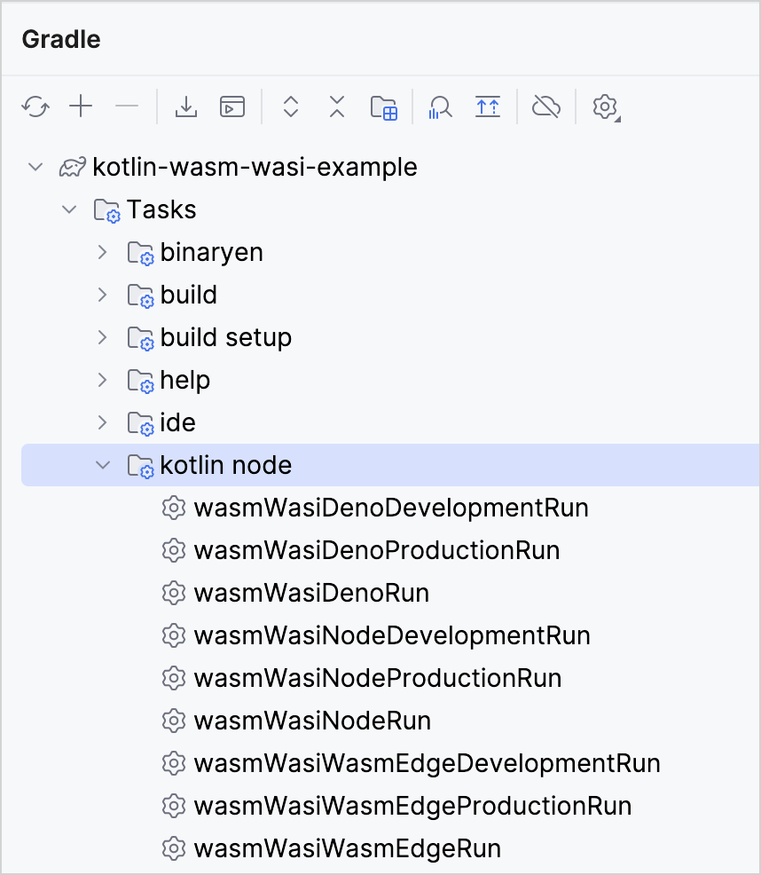

Get started with Kotlin/Wasm and WASI
This tutorial demonstrates how to run a simple Kotlin/Wasm application using the WebAssembly System Interface (WASI) in various WebAssembly virtual machines.
You can find examples of an application running on Node.js, Deno, and WasmEdge virtual machines. The output is a simple application that uses the standard WASI API.
Currently, Kotlin/Wasm supports WASI 0.1, also known as Preview 1. Support for WASI 0.2 is planned for future releases.
Before you start
Download and install the latest version of IntelliJ IDEA.
Clone the Kotlin/Wasm WASI template repository by selecting File | New | Project from Version Control in IntelliJ IDEA.
You can also clone it from the command line:
git clone git@github.com:Kotlin/kotlin-wasm-wasi-template.git
Run the application
Open the Gradle tool window by selecting View | Tool Windows | Gradle.
In the Gradle tool window, you can find the Gradle tasks under kotlin-wasm-wasi-example once the project loads.
From kotlin-wasm-wasi-example | Tasks | kotlin node, select and run one of the following Gradle tasks:
wasmWasiNodeRun to run the application in Node.js.
wasmWasiDenoRun to run the application in Deno.
wasmWasiWasmEdgeRun to run the application in WasmEdge.

Alternatively, run one of the following commands in the terminal from the kotlin-wasm-wasi-template root directory:
To run the application in Node.js:
./gradlew wasmWasiNodeRunTo run the application in Deno:
./gradlew wasmWasiDenoRunTo run the application in WasmEdge:
./gradlew wasmWasiWasmEdgeRun
The terminal displays a message when your application is built successfully:
Test the application
You can also test that the Kotlin/Wasm application works correctly across various virtual machines.
In the Gradle tool window, run one of the following Gradle tasks from kotlin-wasm-wasi-example | Tasks | verification:
wasmWasiNodeTest to test the application in Node.js.
wasmWasiDenoTest to test the application in Deno.
wasmWasiWasmEdgeTest to test the application in WasmEdge.
Alternatively, run one of the following commands in the terminal from the kotlin-wasm-wasi-template root directory:
To test the application in Node.js:
./gradlew wasmWasiNodeTestTo test the application in Deno:
./gradlew wasmWasiDenoTestTo test the application in WasmEdge:
./gradlew wasmWasiWasmEdgeTest
The terminal displays the test results:
What's next?
Join the Kotlin/Wasm community in Kotlin Slack:
Try more Kotlin/Wasm examples: